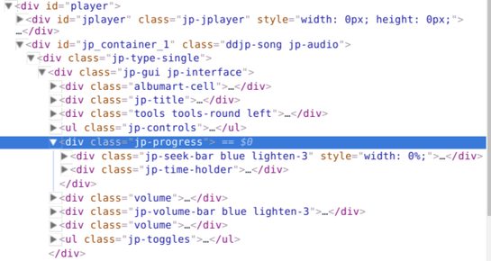

How Not to Protect Your Music
— 23 January, 2017
Ages pass and seasons change, yet one thing stays the same: people will always find a way to download your web content. Just look at the monolithic youtube-dl project with support for almost one thousand supported sites and the effect is easy to see. Of course, some websites make it easier than others.
DJ Record Sharing Pools
Picture this: you're a DJ, making sick song edits, and you want to share them with your fellow DJ boys. Or maybe you're looking for a clean version of this one really cool song, and are hoping that another DJ has already gone through the work of making one so you don't have to. Where do you go? The answer is any of the numerous DJ record sharing pools available online. These services work by charging a subscription fee to allow DJs to come and share their tracks with one another, making the job easier for everyone. Of course, the record sharing pool keeps all of the money and the DJs get... nothing. This doesn't sound like a very good situation to me.
One such site, digitaldjpool.com, has clearly done some serious SEO and shows up in many Google searches for clean versions or edits of songs. One fateful evening I was idly trying to find a clean version of Big Dipper by the Cataracs (great song, by the way) to play at a dance and I found one hosted on this site. Unsurprisingly, the download button is greyed out.
 Heck.
Heck.
Solving the Problem Like a True Hacker
I might have given up at this point and tried some other site, but I did notice one thing which really intrigued me: this particular site seems to let you listen to a preview of the song. A preview which is... actually the entire song! After seeing this, I knew what I had to do. Inspect element on the audio controls for the song preview.
 Real time footage of hacking
Hm, looks like they're using jplayer to play their audio, which means that there should be an audio tag with the song link right under the jplayer div:
<div id="jplayer" class="jp-jplayer">
<img id="jp_poster_0">
<audio id="jp_audio_0" preload="none"
src="https://digitaldjpool.com/Media/Preview/Preview_Quality_Only_AnaxwvvpyPImcPKYgYHHXHfjUANXe4yo3-BhX1E5Q6A9BYpZJR1AnwaVVQc9Aivu0">
</audio>
</div>
Aha! That link points to a full length mp3 of the song. You'll notice that there's some scary text about the audio only being preview quality, but the mp3 seems to be 320kbps and the song sounds fine so I'm not too worried. This method for extracting the song link still isn't ideal though, as the jplayer HTML is only generated after you press the play button. Probably the song link is somewhere in the source of the page already, and is used to create the jplayer HTML. Let's open up the page source (Ctrl+U in Chrome) and see what we can find. I searched for the beginning of the filename ("PreviewQualityOnly") and found something interesting.
<input type="hidden" value="50665" class="hid-song-id" />
<input type="hidden" value="The Cataracs ft Luciana" class="hid-song-artist" />
<input type="hidden" value="Big Dipper" class="hid-song-title" />
<input type="hidden" value="Clean" class="hid-song-version" />
<input type="hidden" value="" class="hid-song-image" />
<input type="hidden" value="/Media/Preview/Preview_Quality_Only_9MUhFnVnAkVMAAIJLTBbVyFaBWnGF3uu16Kz1GcMH8h_kE4n7WHLLsZ4pOZruTqM0" class="hid-song-preview-url" />
Everything we need to create a fully tagged mp3 handed to us on a silver platter. You'll notice that the URL for the song preview is different than it was in the jplayer HTML, but they both seem to point to the same thing, so I'm not complaining. Let's write a Python script to automate this process then, shall we?
Python-ing it up
Yet again, Python is quick, easy, and the obvious choice (noticing a common theme among these posts? Python rocks<3). We'll use requests to fetch the pages and beautifulsoup to parse them.
import requests
from bs4 import BeautifulSoup
import shutil
from mutagen.mp3 import MP3
from mutagen.easyid3 import EasyID3
# retrieve the page
ddp_url = 'https://digitaldjpool.com/Songs/50665/The-Cataracs-ft-Luciana-Big-Dipper-Clean'
r = requests.get(ddp_url)
# parse for urls and metadata
bs = BeautifulSoup(r.text, 'html.parser')
url = bs.find('input', {'class': 'hid-song-preview-url'})['value']
artist = bs.find('input', {'class': 'hid-song-artist'})['value']
title = bs.find('input', {'class': 'hid-song-title'})['value']
version = bs.find('input', {'class': 'hid-song-version'})['value']
# save the file
save_dest = save_dest = artist + " - " + title + " (" + version + ").mp3"
r = requests.get('http://digitaldjpool.com' + url, stream=True)
with open(save_dest, 'wb') as f:
r.raw.decode_content = True
shutil.copyfileobj(r.raw, f)
# tag the file
mp3 = MP3(save_dest, ID3=EasyID3)
mp3['artist'] = artist
mp3['title'] = title
mp3.save()
Huzzah! Free and automatic downloading (with artist/title tags!) from this poorly secured site. Not too bad for about an hour's worth of work. This can of course be made prettier (taking the URL in as an argument instead of having it hardcoded, adding support for album covers if the song has one, etc.), but this should do for my purposes.
Bye, for now,
Stephan